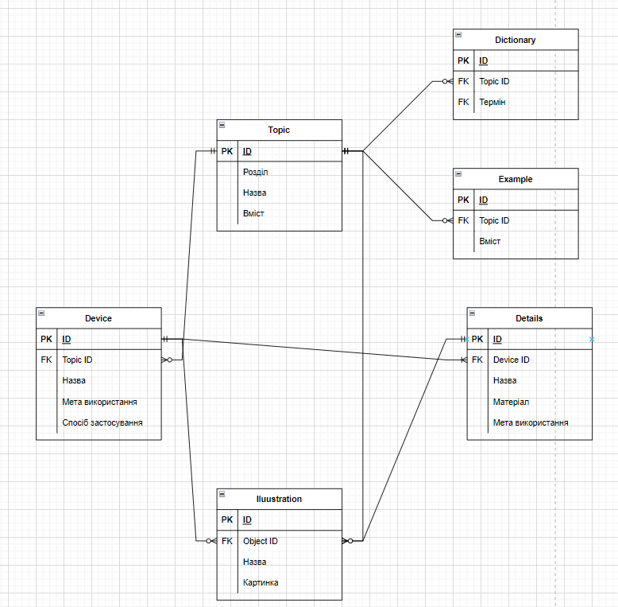

Варіант-7. Предметна область - "Довідник з радіотехніки"

На Даталогічній моделі уже можна побачити, що БД була нормалізована до НФ3, усюди уснують первинні ключі, всі атрибути
від них залежать та немає транзитивних залежностей. Через це на схемі з'явилися нові таблиці. Також все сутності уже зображені з
атрибутами та зв'язками.